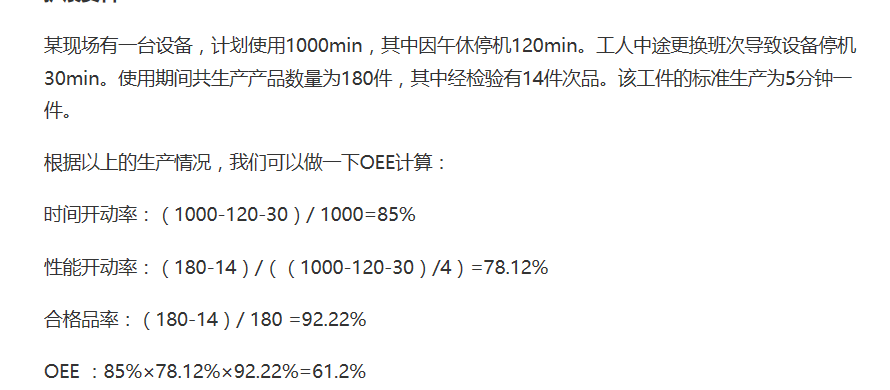

某现场有一台设备，计划使用1000min，其中因午休停机120min。工人中途更换班次导致设备停机30min。使用期间共生产产品数量为180件，其中经检验有14件次品。该工件的标准生产为5分钟一件。根据以上的生产情况，我们可以做一下OEE计算：时间开动率：（1000-120-30）/ 1000=85%性能开动率：（180-14）/（（1000-120-30）/4）=78.12%合格品率：（180-14）/ 180 =92.22%OEE ：85%×78.12%×92.22%=61.2%

2017-09-12 07:28
什么是OEE？
设备综合效率是Overall Equipment Effectiveness，简称OEE。一般，每一个生产设备都有自己的理论产能，要实现这一理论产能必须保证没有任何干扰和质量损耗。OEE就是用来表现实际的生产能力相对于理论产能的比率，它是一个独立的测量工具。
OEE是由可用率，表现性以及质量指数三个关键要素组成：
OEE=可用率x表现指数x质量指数
其中：
可用率=操作时间/计划工作时间
它是用来评价停工所带来的损失，包括引起计划生产发生停工的任何事件，例如设备故障，原材料短缺以及生产方法的改变等。
表现指数=理想周期时间/（操作时间/总产量）=（总产量/操作时间）/生产速率
表现性是用来评价生产速度上的损失。包括任何导致生产不能以最大速度运行的因素，例如设备的磨损，材料的不合格以及操作人员的失误等。
质量指数=良品/总产量
质量指数是用来评价质量的损失，它用来反映没有满足质量要求的产品（包括返工的产品）。
设备综合效率OEE是一种简单实用的生产管理工具，在欧美的制造业和中国的跨国企业中已得到广泛的应用，设备综合效率指数已成为衡量企业生产效率的重要标准，也是TPM（Total Productive Maintenance）实施的重要手法之一。
OEE的第一次应用可以追溯到1960年．将它用于TPM (全员生产维修)的关键度量值。TPM是一种工厂改善方法．通过调动员工的主人翁精神来调动员工的自主性。从而持续、快速地改善制造工艺水平。
OEE计算实例
设某设备某天工作时间为8H，班前计划停机10Min，故障停机30Min，设备调整35Min，产品的理论加工周期为1min/件，一天共加工产品400件，有20件废品，求这台设备的OEE。
根据上面可知：
计划运行时间=8*60-10=470（min）
实际运行时间=470-30-35=405（min）
有效率=405/470=0.86（86%）
表现性=400/405=0.98(98%)
质量指数=(400-20)/400=0.95(95%)
OEE=有效率*表现性*质量指数=80%
在上表中,我们只列举了一些事件原因，在实际应用中它可能包括与生产有关的任何原因。OEE能准确地告诉你设备效率如何，在生产的哪个环节有多少损失，以及你可以进行哪些改善工作。长期的使用OEE工具，企业可以轻松的找到影响生产效率的瓶颈，并进行改进和跟踪，以达到提高生产效率的目的。
OEE与六大损失
设备的各种不良loss情况会对设备造成直接影响。因为在英语中loss的意思是浪费、损失，因此我们把导致设备停机、故障、损耗等不良情形的各类原因叫做损失项目，这些损失项目具体包括了：
1、故障损失；
2、换模具与调整损失；
3、空运转与暂停损失；
4、减速损失；
5、质量缺陷和返工；
6、开工损失等。
降低设备损失的目的是提高设备的综合使用率，保证设备不产出不良品，同时提高生产效率，要降低设备的损失首先我们先来认识一下设备的六大损失。
故障停机/损失是指故障停机造成时间损失和由于生产缺陷产品导致数量损失。因偶发故障造成的突然的、显著的设备故障通常是明显的并易于纠正；而频繁的、或慢性的微小故障则经常被忽略或遗漏。由于偶发性故障在整个损失中占较大比例，所以许多企业都投入了大量时间努力寻找避免这种故障，然而，要消除这些偶发性故障是很困难的。所以，必须进行提高设备可靠度的研究，要使设备效率最大化，必须使故障减小到零，因此，首先需要改变传统故障维修中认为故障是不可避免的观点。
换装和调试损失是因换装和调试而导致停机和产生废品所造成的损失，一般发生在当一个产品的生产完成后，因生产另一种产品进行换装和调试的时候。为了达到单一时间内的换装（少于10分钟），可以通过明确区分内换装时间（在机器停机后才能完成操作）和外换装时间（在机器运转时可以完成操作），以及减少内换装时间来减少整个换装时间损失。
空闲和暂停损失是指由于误操作而停顿或机器空闲时发生短暂停顿而产生这种损失。例如，有些工件阻塞了滑槽顶端，导致了设备空闲；因生产了有缺陷产品，传感器报警而关闭了设备。很明显，这种停顿有别于故障停工，因为除去阻塞的工件和重新启动设备即可恢复生产。
减速损失是指设计速度与实际速度的差别。速度损失对设备效率的发挥产生了较大障碍，应当仔细研究，以消除设计速度和实际速度二者之间的差别。设备实际速度低于设计速度或理想速度的原因是多种多样的，如机械问题和质量缺陷，历史问题或者设备超负荷等。通常，通过揭示潜在的设备缺陷，谨慎地提高操作者的速度有助于问题的解决。
质量缺陷和返工是指由于设备故障引起的生产过程中的质量缺陷和返工，通常，偶然性缺陷很容易重调设备至正常状态来消除，这些缺陷包括缺陷数的突然增加或其它明显的现象。而慢性缺陷的原因难于发现，常被遗漏或忽略，需要返工的缺陷发也属于慢性损失。
开工损失是在生产的初期阶段（从设备启动到稳定生产）产生的损失。这些损失的数量因工序状态的稳定性，设备、夹具和模具的维护水平，操作技能的熟练程度等的不同而异。这项损失较大，而且是潜在的。在实际生产中，通常会不加鉴别地认为产生开工损失是不可避免的，因此很少加以消除。
利用OEE的一个最重要目的就是帮助管理者发现和减少一般制造业所存在的六大损失：停机损失、换装调试损失、暂停机损失、减速损失、启动过程次品损失和生产正常运行时产生的次品损失。下面表格是六大损失的简单说明及其与OEE的关系：
OEE的应用价值
OEE的解决方案能够使得制造商在世界占有一席之地，实施一个适当的OEE系统会给制造商们带来可观的经济效益。以下列出了其中的一些效益。
1)减少故障成本。当设备不能使用时，生产即停止，造成无法正常为用户提供产品，从而影响资金流动和税收。例如，在一个典型半导体生产厂，设备停工1 h会使税收损失$1 00 000。相反，如果能将50个标准刀具的故障减少到1％ ，则每年能减少相当可观的故障成本。
2)降低维修成本。OEE能够预测维修，从而降低维修成本。当停工次数增加时，维修部门能够分析趋势，来预测即将发生的失效。通过把0EE系统连接至CMMS系统，维修部门能够提前采取措施，做好预测维修。例如．维修部门可以事先订购零件，提高效率。可以利用现有资源调派人手．而不是临时雇一些维修工人。与失效后再维修相比．可以大大节省成本。
3)增加劳动效率。就目前的经济环境而言，制造商更加期望提高现有队伍的生产力。OEE系统有助于生产力的提高，因为它不仅可以帮助操作者分析停工原因，而且可以帮助操作者获得生产数据。用这些数据，管理者可以在员工生产力的基础上合理安排资源。当业务发生转变时，OEE可以帮助管理者判断现有生产力的其他能力．而不是雇佣新员工。
4)减少质量成本。质量等级是合格品占总零件产品的百分比。OEE系统必须知道总的零件数量、废品和失效件数量以及失效原因。因为这些信息是在一台特定机器或生产线上获得的，从而得知这台机器的加工能力。用OEE对质量数据的跟踪，生产经理能够找到原因，并且降低返修和废品的成本。在每个生产阶段，关注提高生产质量的信息，可减少保修成本。在以前的工业调查中，世界范围内的制造商从97％的合格率中获利，废品和返修率成本为2％，保修成本为1％。
5)提高员工生产力。OEE系统能够使工厂达到无纸化管理。工厂操作者和管理者花费大量的时间在纸上记录分析报告停工原因。OEE系统自动记录报告故障和效率。把员工从报告中解放出来，允许员工完成一些更加有意义的任务。
6)提高劳动生产率。减少设备的故障，提高操作者的生产力及减少零件失效可以在同样资源的基础上获得最大的生产效率。